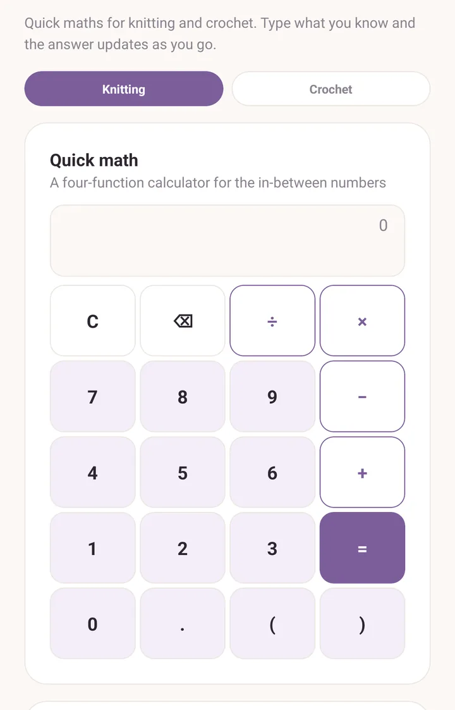
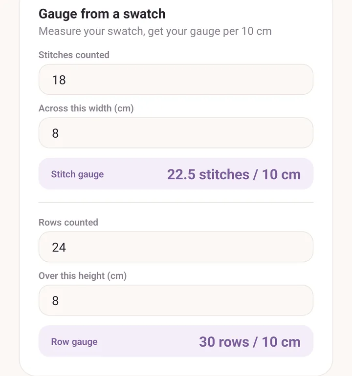
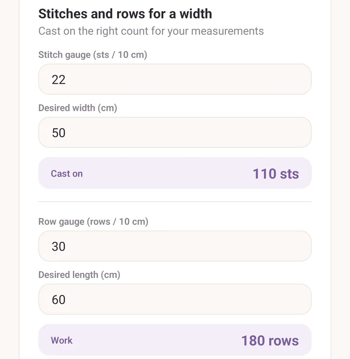
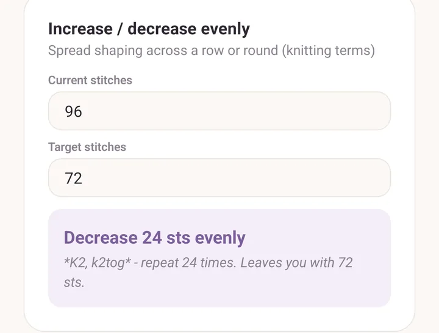

Calculator
Six small tools on one scrolling screen. Type what you know and the answer appears underneath as you go. There is no Calculate button and nothing to clear: fill in the one card you need and ignore the rest.
Opening it
- More, then Craft calculator in the Tools section.
- The Calculator tool in the PDF viewer's tool fan, so you can work out a number without leaving the pattern.
- The calculator icon in the pattern reader header.
- Use in calculator on a project's gauge row. That one opens with the gauge you recorded already filled in.
Whichever way you come in, it is the same screen.

Knitting or crochet
At the top, Knitting and Crochet. It starts on your default craft, set in Settings.
The choice changes the wording in two places: Gauge from a swatch asks for stitches or for stitches worked as sc or dc, and Increase / decrease evenly writes its answer in knitting terms or in crochet terms.
The calculator works in centimetres, and in metres for yarn lengths.
Quick math
A four-function calculator with brackets, for the in-between sums ("3 skeins at 175 m"). It handles plus, minus, times, divide, decimals and negative numbers. There are no scientific functions.
Gauge from a swatch
You knitted a swatch. This turns it into a gauge per 10 cm.
- Stitches counted, and Across this width (cm).
- Rows counted, and Over this height (cm).
You get Stitch gauge and Row gauge, each per 10 cm. The two halves are independent, so you can fill in one and leave the other empty.
Measure over as wide a piece of the swatch as you can. Counting 18 stitches over 8 cm gives a truer figure than counting 5 over 2 cm.

Stitches and rows for a width
The one most people want first: how many stitches do I cast on to get the width I want?
- Stitch gauge (sts / 10 cm) and Desired width (cm) give you Cast on.
- Row gauge (rows / 10 cm) and Desired length (cm) give you Work, in rows.

Adjust a pattern to your gauge
For when the pattern's tension is not yours, and you want the pattern's finished size anyway.
- Pattern stitch count, the number the pattern tells you to cast on.
- Pattern gauge (sts / 10 cm).
- Your gauge (sts / 10 cm).
You get Cast on instead, plus a note saying what width that keeps.
Increase / decrease evenly
You have a stitch count and you need a different one, spread evenly across a row or round.
- Current stitches.
- Target stitches.
The answer comes out as an instruction you can work straight from, in the terms of the craft you picked at the top, for example a repeat with k2tog for knitting or a decrease over two stitches for crochet. Where the repeats do not divide evenly, it tells you which of them to work one stitch longer so the shaping stays spread out.
If the change will not fit across the stitches you have, it says so rather than giving you a number that cannot be worked.

Skeins needed
- Total length needed (m), from the pattern.
- Length per skein (m), from the ball band.
You get Buy, rounded up, with a reminder to grab an extra if the dye lot matters. For a jumper in a single colour, one spare ball is cheap insurance; matching a dye lot later usually is not possible.
See also
- Projects: recording your actual gauge, and the Use in calculator shortcut.
- PDF tools: the calculator inside the tool fan.
- Yarn stash: what a ball band tells you.